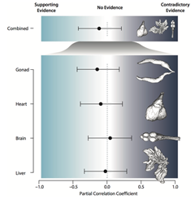

phyinformR: Phylogenetic experimental design and data exploration in R
PhyInformR is an open source software package that facilitates rapid calculation of phylogenetic informativeness and several novel related assessments of the phylogenetic utility of any given dataset or dataset partition.
By facilitating computation on user hardware, PhyInformR increases the potential power users can apply toward screening datasets for phylogenetic information content by orders of magnitude.
PhyInformR also features expanded functionality compared to current resources, providing new tools for data visualization and routines optimized for rapid statistical calculations using parallel processing.
TOAST: Transcriptome Ortholog Alignment Tools
TOAST is an open source R package designed to help you effectively harness public data, visualize missing data patterns, and assemble multiple sequence alignments.TOAST can be downloaded here and requires R.
TOAST is continually updated to include utility functions that make data parsing easier and circumvent the use of multiple software steps in informatic pipelines. TOAST can generate output that can be fed directly into IQTREE and has numerous functions for analyzing missing data and subsetting massive sequence datasets
Additional Scripts
 Here we provide an overview of custom scripts that were created in the course of our projects with detailed tutorials and additional content
This archive will be updated as new work is published and provide links to the corresponding data files allowing you to replicate our results while learning new techniques
Please check back periodically for new updates!